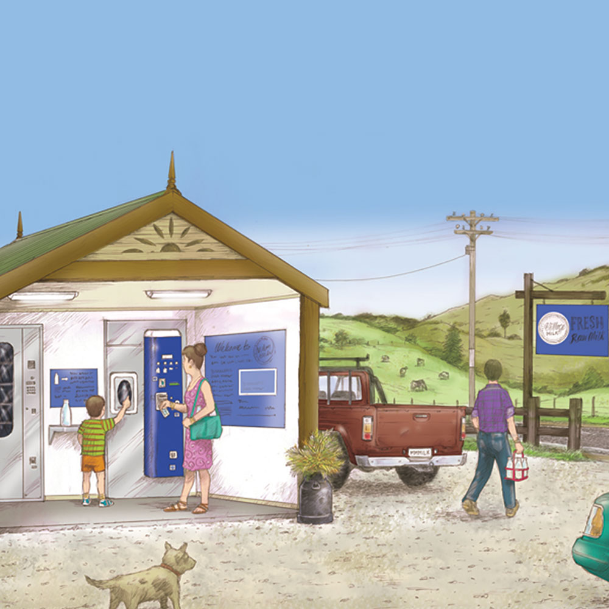

About Village Vending
Farm gate milk, made simple.
Village Milk helps farms around New Zealand and Australia get set up to sell fresh milk directly to customers at the farm gate.
Equipment and advice.
Village Vending supplies automatic milk dispensing machines, reusable bottle dispensers and vending machines for other produce or products.
The team also offers end-to-end consultancy, helping farms plan and implement their farm gate sales setup with advice on everything from MPI registration to transit planning.
Village Milk is the exclusive New Zealand distributor for DF Italia dispensing machines.
